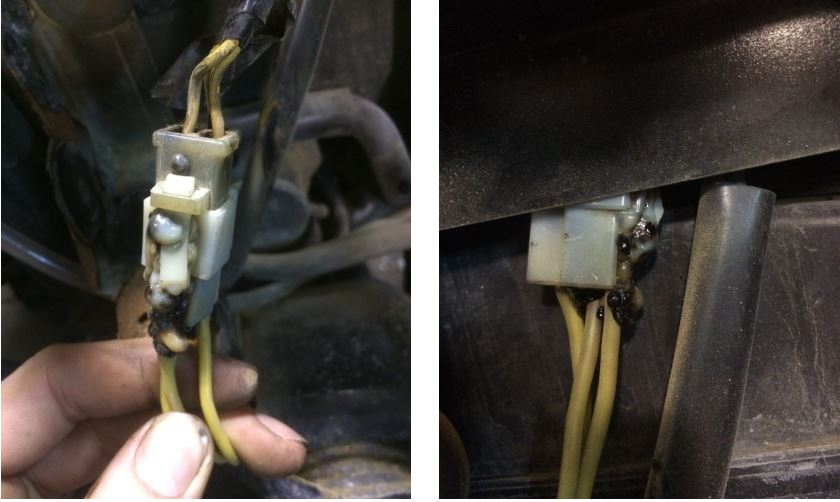
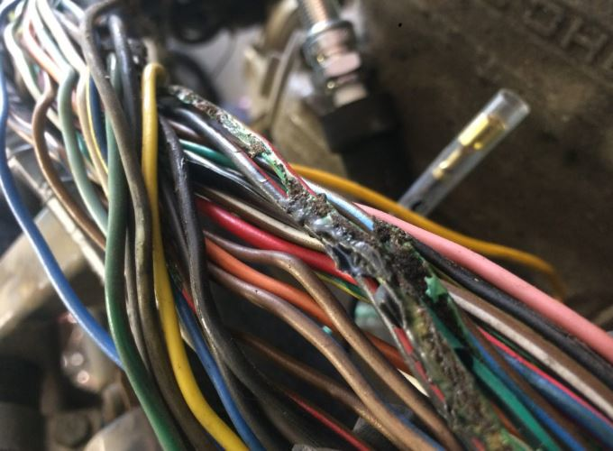
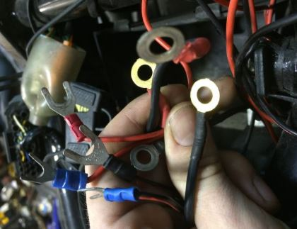

Motorcycle wiring tends to be the biggest setback for many people. Wether you like adding new accessories to your bike or even try tackling your own motorcycle electrical issues. In this post, I want to give you all some of my BEST motorcycle wiring tips and tricks when it comes to making sure that your motorcycles connectors, splicing techniques, and wired connections are clean and reliable. I also want to give you all some pointers that I’ve gained over the years to finding potential problems throughout your motorcycles wiring.
Motorcycle Wiring: Basic Principles You May Not KnowMost motorcycle wiring problems are commonly found in two areas..
– Harness Connections:This is where your motorcycle’s electrical components join together in a verity of different ways. From multiple pin-out connectors to male/female bullet connectors and simple male/female blade connectors, over time these all can develop issues is their own special ways.
Ground issues in any circuit can be the most frustrating problem to find. There are so many different loads (light bulbs, switches, signal components…etc) that may share the same ground that when a problem arises, the circuit can take on a mind of its own. Give false readings, fail to function, intermittent problems, and even just flat out catch on fire. Although, I can say some for some bikes a fire is exactly what is needed. All because of these stupid grounds!
– Dielectric Grease: DOES NOT HELP with terminal contact points within harness connectors. So globing this paste deep inside of your multi-pin connectors can actually do more harm then good. Dielectric grease is designed to be placed on the exterior/interior of connector walls to keep moister, water, dirt from entering into the connection. You would think it would do the same when placed directly onto male/female terminals but this is a myth. It can actually cause higher resistance in some cases as well as a poor connection.
– New Accessory Instructions: Just because the instructions tell you to wire their parts straight to the battery’s positive and negative terminals does not mean that is the only way to wire it. After a while, those extra connectors hooked straight to the battery not only look hideous, but in some cases can cause shorts or most commonly loosen the battery cables leaving you stranded on your next gas fill up.
– Battery cables: I think I could argue that loose battery terminals or issues within the cables themselves are the single most overlooked issue on a motorcycle. I can’t tell you how many times I have solved funky electrical issues by simply tightening the battery cables. ESPECIALLY on the CBR family of bikes. Besides taking the steps to check these connections FIRST before diving headfirst into an electrical issue. My advice for you all is no matter how hard it is, fight the urge to USE A PHILLIPS HEAD SCREW DRIVER TO PUT THE FINAL TIGHTEN ON YOUR TERMINAL BOLT. That’s right, bust out that 8 or 10mm socket wrench and really give it a turn. If you can move the cables in any way then they are loose and it WILL cause a problem.
You can wrap multiple ground wires into one single connector and mount it to a clean frame ground by simply placing it under a (paint-less metal) component mounting bolt. Keep it clean, keep it professional… Don’t be that guy.
Why Your Wiring Connections Will failOvertime motorcycle wiring connectors/connections can fail for many reasons, here are some common ones.
– Heat (Not properly insulated, too close to high temp parts)
– Tension (Bad wire routing)
– High resistance (Caused by loose connections, contaminants, oxidation, etc)
– Rust (Any kind of surface build up over time)
– Moister/water/mud (Pressure washing to close to connections, outdoor stored bikes, Off-road use)
– Movement (Could be as simple a turning the handle bar, or sitting on your seat)
– Operator error (Pulling on cables to disconnect connectors, probing straight into a wire when testing)
– Cheap connection repairs ( solder-less wire repairs, incorrect bare wire mending)
CHECK:1. Main Fuse
2. Battery
3. Main Switch
4. Wiring Connection of the entire signaling system
• Splug or spark plug gap clearance 0.6 ~ 0.7 mm
• Remove the Spark plug cap and check spark plug cap resistance 3.75 – 6.25 K Ω
• Primary coil resistance 2.16 ~ 2.64 23 Ω
• Secondary coil resistance 8.64 ~ 12.96 Ω
Electrode damage /wear replace the spark plug
• Insulator color – replace the spark plug normal color medium to light
• Clean spark plug with a spark plug cleaner or wire brush